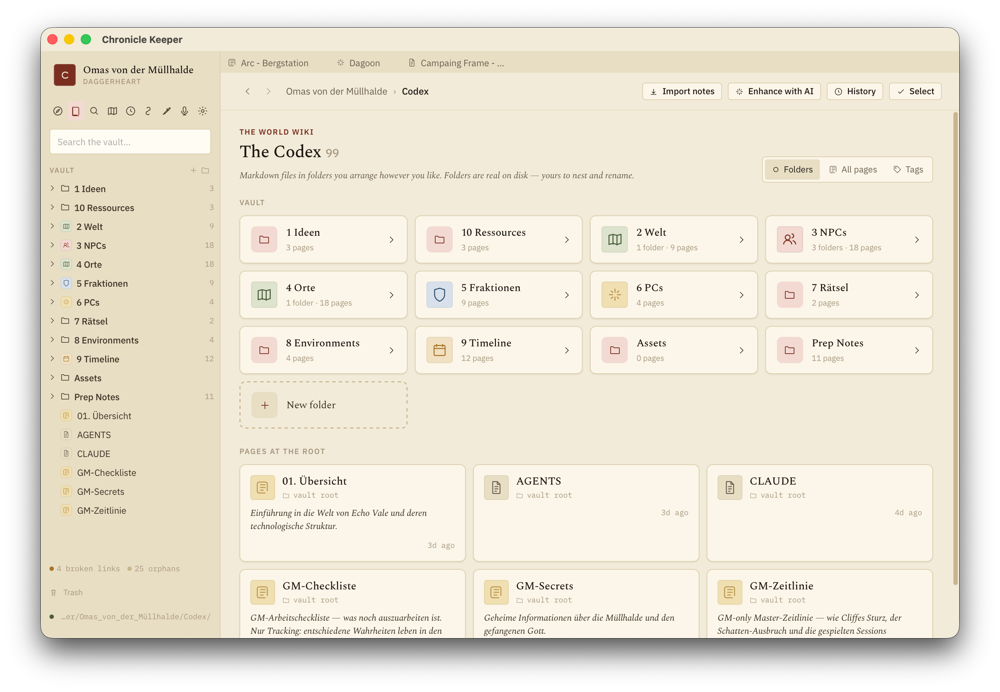
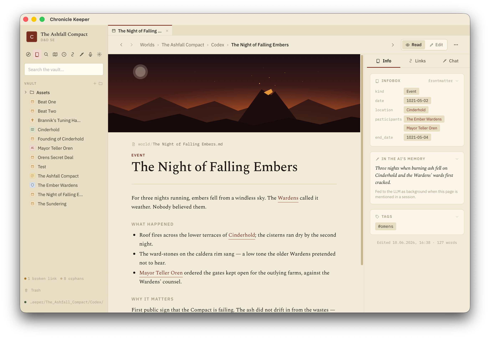

A look inside
Your whole world, in one app.
Pages, maps, a timeline and a graph — every view computed live from the same Markdown files. Here's what that looks like.

The Codex
Your world as a folder of wiki pages — NPCs, places, factions, lore — linked with [[wikilinks]].

Pages
Editable Markdown with an infobox, backlinks, banner art and the one-liner the AI remembers.

The Atlas
Pin places onto your own maps. Each pin is a codex page; maps nest from continent to city.

The Timeline
Dated pages on your world's own calendar — eras, spans and "years later" gaps.

The Graph
The whole web of characters, factions and places — coloured by kind, linked by relation.

The Keeper
An AI that has read your whole world — answers with citations and edits the codex with your approval.